SECTION 1 / 95
Présentation technique complète — Mars 2026
Voici la présentation complète de SAGS OS. On va tout passer en revue ensemble : le front-end, la génération de mémoires techniques par IA, le chat admin, et surtout le nouveau module GED.
95 sections, zéro bullshit — Baptiste
L'application est en ligne. Voici les identifiants pour tester les deux interfaces.
Dashboard complet, IA, GED
admin@sagsos.online
Mot de passe
SagsAdmin2026!
Interface mobile, chat IA
agent@sagsos.online
Mot de passe
SagsAgent2026!
Cliquez sur un identifiant pour le sélectionner. Le routage est automatique selon le rôle.
SECTION 2 / 95
SAGS OS, c'est une application web que j'ai développée pour centraliser toute la gestion du Groupe SAGS. Au lieu d'avoir des fichiers Excel, des mails, des appels dans tous les sens — tout est regroupé dans une seule interface.
Concrètement, il y a deux interfaces : une pour l'admin (toi Jalil) et une pour tes agents terrain (sur leur téléphone). Plus un chatbot IA intégré pour les deux.
L'app tourne sur visionia-france.com, hébergée chez Vercel à Paris (datacenter CDG1). Base de données Supabase. Intelligence artificielle Claude (Anthropic) + GPT-4o (OpenAI).
SECTION 3 / 95
Framework React full-stack avec Turbopack. Server-Side Rendering, API routes, App Router.
+ React 19 + TypeScript 5
Base de données PostgreSQL, authentification, stockage fichiers, temps réel via WebSockets.
+ pgvector pour le RAG
Claude Sonnet 4.6 pour la génération, Claude Haiku pour la vision, GPT-4o pour la relecture.
AI SDK v6 (Vercel)
Design system premium : Geist font, Phosphor Icons, Framer Motion, shadcn/ui.
+ Recharts, FullCalendar, Leaflet
SECTION 4 / 95
Toute l'app est pensée multi-entités. Chaque document, chaque agent, chaque site est rattaché à sa société.
SAGS
MAN
MC_SECU
MC_GEST
RAI
SECTION 5 / 95
293
fichiers source
21
routes API
22
server actions
151
composants React
30+
tables Supabase
Comment l'application est construite côté interface. Le dashboard, la navigation, le design system, le responsive.
SECTION 6 / 95
L'app utilise le App Router de Next.js. Chaque page est une route. Voici la structure :
7 rôles : admin, rh, exploitant, chef_site, superviseur, lecture_seule, agent_terrain. Chaque rôle a ses permissions et ses pages.
SECTION 7 / 95
Sur desktop, tu as une sidebar à gauche (rétractable), un header sticky en haut avec le breadcrumb et les notifications, et le contenu au centre. Sur mobile, la sidebar disparaît et une barre de navigation en bas la remplace.
SECTION 8 / 95
La sidebar regroupe toutes les pages en 5 catégories. Les modules marqués V2/V3 sont verrouillés pour le moment — on les activera au fur et à mesure.
SECTION 9 / 95
#E80000
SAGS Red (primary)
#FAFAF9
Off-white (background)
#FFFFFF
Pure white (cards)
#0A0A0A
Dark (texte)
Geist Sans
Police principale — installée via le package npm geist
Geist Mono
Pour le code, les références, les identifiants
SECTION 10 / 95
Chaque élément a son niveau de profondeur pour éviter les conflits visuels :
Le générateur automatique de mémoires techniques à partir de vos CCTP. Rédigé par Claude Sonnet 4.6, double review par GPT-5.4-mini + Claude Sonnet 4.6. Pipeline V2 industriel.
SECTION 11 / 95
En 3 étapes, tu passes d'un CCTP brut à un mémoire technique complet de 20 à 60 pages, prêt à exporter en PDF ou DOCX.
SECTION 12 / 95
Tous tes mémoires sont affichés sous forme de cartes. Tu vois le titre, le client, le nombre de pages, la date, et surtout le statut : Terminé, Plan généré, En cours...
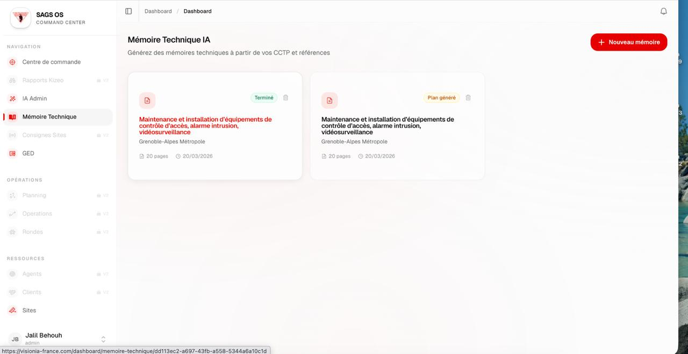
SECTION 13 / 95
Tu cliques sur « + Nouveau mémoire », tu renseignes le titre du marché, le client / donneur d'ordre, et le type de prestation (Gardiennage, SSIAP, Rondes, Événementiel, Alarme, Intervention, Cynophile, Chantier).
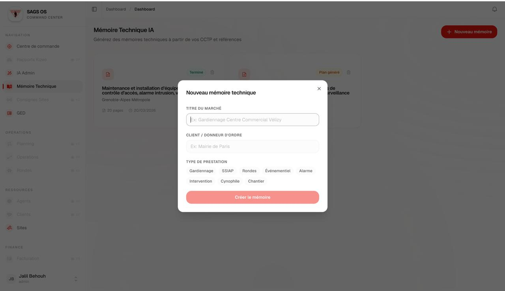
SECTION 14 / 95
Tu uploades ton fichier CCTP (PDF ou DOCX). L'IA va l'analyser : extraction du texte, identification des sections, repérage des exigences. Le fichier est stocké dans Supabase Storage, et le texte est extrait côté serveur avec unpdf (pour les PDF) et mammoth (pour les DOCX).
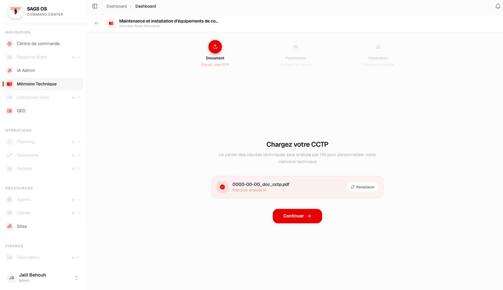
SECTION 15 / 95
C'est ici que tu configures précisément ce que l'IA va générer. Tu choisis :
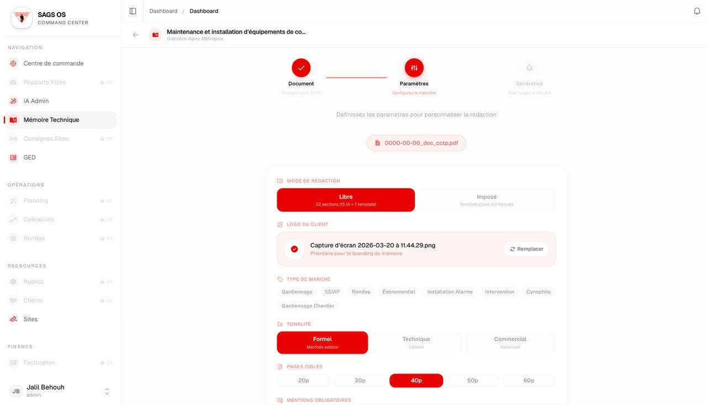
SECTION 16 / 95
Tu coches ce que tu veux inclure dans le mémoire : Autorisation CNAPS, Certifications SSIAP/SST, Moyens humains, Engagement QSE, Références clients... Et les sections obligatoires : Organigramme, Planning, Références, Chiffrage.
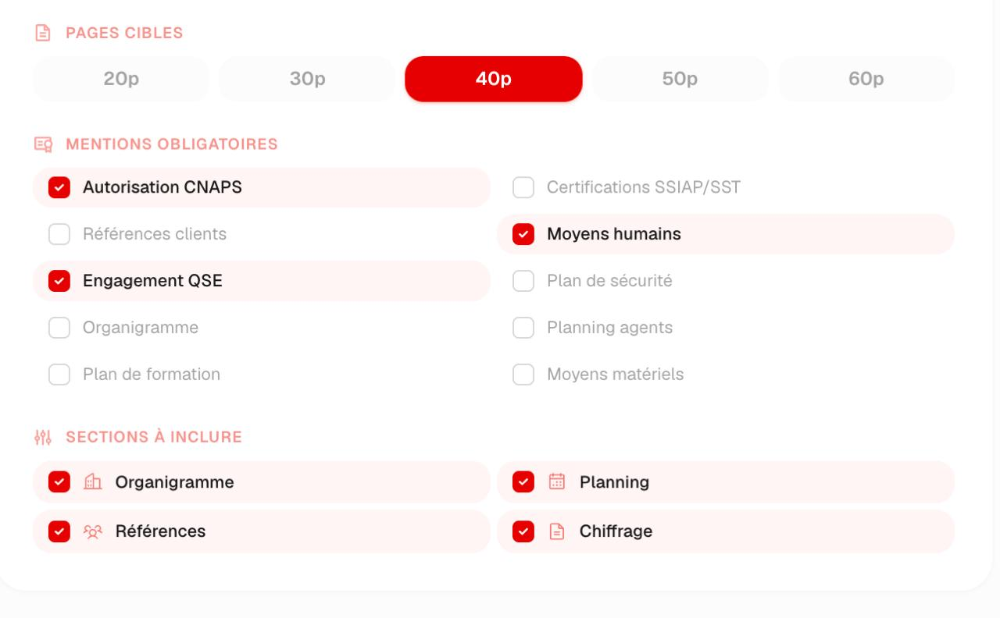
SECTION 17 / 95
Une fois généré, le mémoire passe par une boucle de double review (GPT-5.4-mini + Claude Sonnet 4.6) avec un score cible de 55/60. L'UI affiche les logs de contrôle par groupe : Organisation, Opérations, Qualité/RSE, Formation. Chaque critère a sa barre de progression.
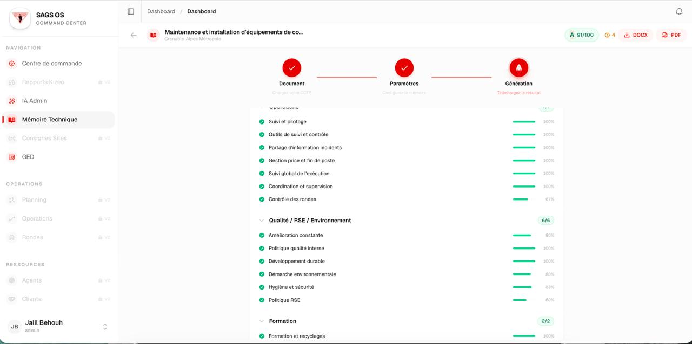
Ici on voit les logs de contrôle post-génération. Chaque groupe (Opérations, Qualité/RSE, Formation...) affiche son ratio trouvé/total et son pourcentage de confiance. Le score est calculé sur /60 par la dual review GPT-5.4-mini + Sonnet 4.6. Le seuil de validation est 55/60.
SECTION 18 / 95
L'interface mémoire est centrée sur le PDF. L'export n'est pas un rendu aveugle — il relance sa propre validation (validateMemoireExport) pour vérifier placeholders, accents, vocabulaire hors-sujet, et couverture CCTP. Si le mémoire échoue aux quality gates, l'export est bloqué.
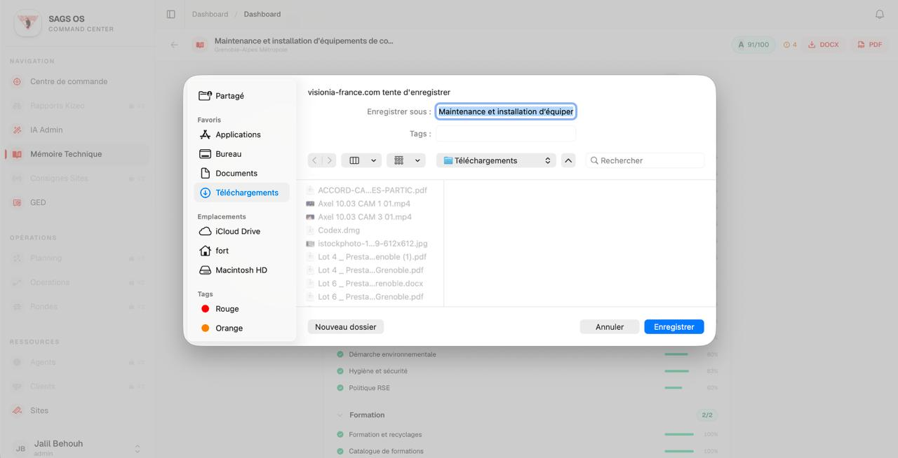
SECTION 19 / 95
Voici le pipeline V2 complet — ce qui se passe quand tu cliques « Générer » :
unpdf (PDF page par page avec marqueur [PAGE N]) ou mammoth (DOCX). Détection des CCTP « écrasés » avec re-extraction. Diagnostics : caractères, mots, lignes, pages, blocs.
cctpProfile)Extraction structurée : sites nominatifs, horaires, livrables, délais, contraintes opérationnelles, termes de validation. Détection de la famille de marché.
Construction du plan : mode libre/imposé, objectif pages/mots, matrice exigences → sections, schémas (organigrammes, plannings, logigrammes). Résolution du blueprint par famille (titres, sous-sections, lexique hors-sujet).
Recherche Full-Text via search_rag_chunks_fts avec biais de récence et boost qualité. Filtrage par tags marché. Le CCTP reste la source primaire, le RAG enrichit.
Génération par lots (batching). Prompt système avec : CCTP = source primaire, sites/horaires/délais explicites, accents obligatoires, zéro placeholder, claims prouvés uniquement. Temp 0.35.
Deux reviewers jugent en parallèle. Issues et patchs fusionnés. Score le plus sévère retenu. Critères bloquants : mémoire générique, sites manquants, horaires absents, placeholders, accents, hors-sujet.
Si score < 55/60 ou blocages : Claude Sonnet 4.6 corrige sur base des patch_instructions, puis re-review. Jusqu'à validation ou plafond.
Validation export : placeholders, accents métier, vocab hors-sujet, claims non prouvés, couverture CCTP (sites, horaires, livrables, termes). Si échec = export bloqué.
SECTION 20 / 95
Pour que le mémoire sonne naturel et pas « écrit par un robot », on interdit 16 expressions :
Le résultat : un mémoire qui sonne comme du Jalil, pas comme du ChatGPT.
SECTION 21 / 95
Le système ne traite pas tous les marchés de la même façon. La couche market-rules.ts détecte automatiquement la famille à partir du CCTP et adapte toute la chaîne : structure, vocabulaire, sections, review, score.
Parcs, espaces verts, rondes extérieures. Impose sites, horaires, itinéraires de ronde.
Bâtiments administratifs, sièges sociaux. Focus sûreté, contrôle d'accès, accueil.
Chantiers BTP, zones sensibles. Garde statique, rondes périmétriques, relevés.
Musées, ERP. SSIAP, flux public, évacuation, accès PMR.
Événements, festivals. Dispositif temporaire, PC sécurité, flux.
Maintenance préventive/curative, stock, devis, télégestion. Pénalise CNAPS, SSIAP, rondes, PTI, DATI. Logique intégrateur, pas sécurité humaine.
SECTION 22 / 95
market-structure.ts)Chaque famille de marché a son blueprint qui transforme la structure générique en structure spécialisée. Le blueprint fournit :
SECTION 23 / 95
cctp-profile.ts)C'est le pivot central du pipeline. Le cctpProfile extrait de manière structurée toutes les données clés du CCTP pour piloter la génération, la review ET l'export.
Familles de marché détectées
Sites nominatifs extraits (avec filtre anti faux-positifs)
Horaires imposés par le CCTP
Livrables attendus (rapports, bilans, annexes)
Contraintes spécifiques (délais, qualifs, EPI)
Termes de conformité à reprendre
Ce profil sert à : piloter le blueprint, injecter les objets réels dans les prompts, calculer la couverture mémoire vs CCTP, durcir la review, et contrôler l'export. Sans cctpProfile, le mémoire serait générique.
SECTION 24 / 95
plan.ts)Le plan canonique est l'objet unique qui synchronise toute la chaîne. Sans lui, le système ne ferait qu'enchaîner des prompts. Avec lui, on a un objet de pilotage qui lie structure, exigences, qualité et export.
SECTION 25 / 95
review-loop.ts)C'est le cœur du contrôle qualité. Deux modèles IA indépendants jugent le mémoire. La lecture la plus sévère gagne. Si échec, on corrige et on recommence.
Primaire : gpt-5.4-mini
Fallback 1 : gpt-5-mini
Fallback 2 : gpt-4o
Modèle : claude-sonnet-4-6
Même modèle que le rédacteur, mais avec un prompt reviewer spécifique.
REQUIRE_NO_BLOCKING=true)SECTION 26 / 95
Un reviewer considère comme bloquant (= pas d'export possible) :
Ne répond pas spécifiquement au CCTP
Si le CCTP nomme des sites, ils doivent apparaître
Obligations temporelles du CCTP non reprises
Rapports, bilans, annexes demandés
« À compléter », « Si retenu », « Cf annexe »
« securite » au lieu de « sécurité »
SECTION 27 / 95
export-validation.ts)L'export PDF n'est pas un simple « téléchargement ». Il relance sa propre validation. Même un mémoire sauvegardé il y a longtemps est re-vérifié avant sortie.
SECTION 28 / 95
Chaque étape utilise le modèle optimal pour sa tâche :
| Étape | Modèle | Variable config |
|---|---|---|
| Rédaction | claude-sonnet-4-6 | MEMOIRE_WRITER_MODEL |
| Review primaire | gpt-5.4-mini | MEMOIRE_REVIEW_MODEL_PRIMARY |
| Review fallback 1 | gpt-5-mini | MEMOIRE_REVIEW_MODEL_FALLBACK_1 |
| Review fallback 2 | gpt-4o | MEMOIRE_REVIEW_MODEL_FALLBACK_2 |
| Review Anthropic | claude-sonnet-4-6 | MEMOIRE_REVIEW_MODEL_ANTHROPIC |
| Correction | claude-sonnet-4-6 | (même que writer) |
| Parsing template | claude-sonnet-4-6 | — |
Pourquoi dual review ? Un seul reviewer crée un biais. Deux reviewers indépendants (OpenAI + Anthropic) avec fusion de la lecture la plus sévère éliminent les faux négatifs et les faux positifs.
SECTION 29 / 95
Deux fichiers clés contrôlent ce que l'IA a le droit d'affirmer sur SAGS :
company-profile.tsevidence-registry.tsSECTION 30 / 95
16 fichiers dédiés répartis en 3 couches :
api/memoire-technique/generate/route.ts
api/memoire-technique/review/route.ts
api/memoire-technique/export-pdf/route.ts
api/memoire-technique/export-docx/route.ts
api/memoire-technique/parse-template/route.ts
lib/memoire/cctp-text.ts
lib/memoire/cctp-profile.ts
lib/memoire/market-rules.ts
lib/memoire/market-structure.ts
lib/memoire/company-profile.ts
lib/memoire/evidence-registry.ts
lib/memoire/export-validation.ts
lib/memoire/schema-artifacts.ts
lib/memoire-pipeline/config.ts
lib/memoire-pipeline/types.ts
lib/memoire-pipeline/plan.ts
lib/memoire-pipeline/layout.ts
lib/memoire-pipeline/review-loop.ts
Le chatbot qui interroge toutes tes données en langage naturel. Agents, planning, factures, rondes — tu poses ta question, l'IA va chercher dans Supabase.
SECTION 31 / 95
Quand tu ouvres IA Admin, tu vois tes conversations précédentes à gauche, et au centre 6 actions rapides : Tableau de bord, Agents actifs, Planning du jour, Factures en retard, Opérations ouvertes, Rondes du jour.
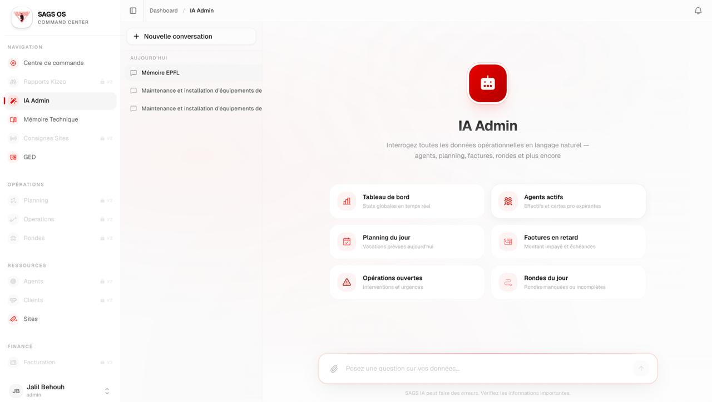
SECTION 32 / 95
Chaque conversation est sauvegardée. Tu peux créer une nouvelle analyse, reprendre une ancienne, ou en supprimer.
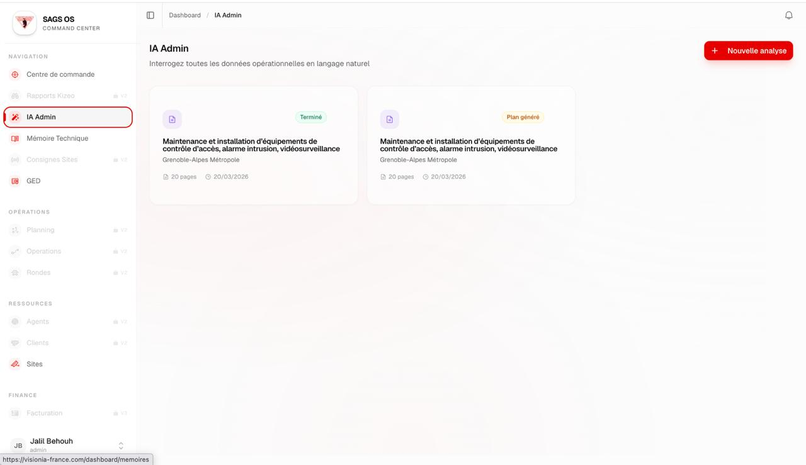
SECTION 33 / 95
Tu donnes un titre (« Mémoire EPFL 2025 ») et un contexte optionnel (« Client, Planning, Rondes... »). L'IA adapte ses réponses en fonction.
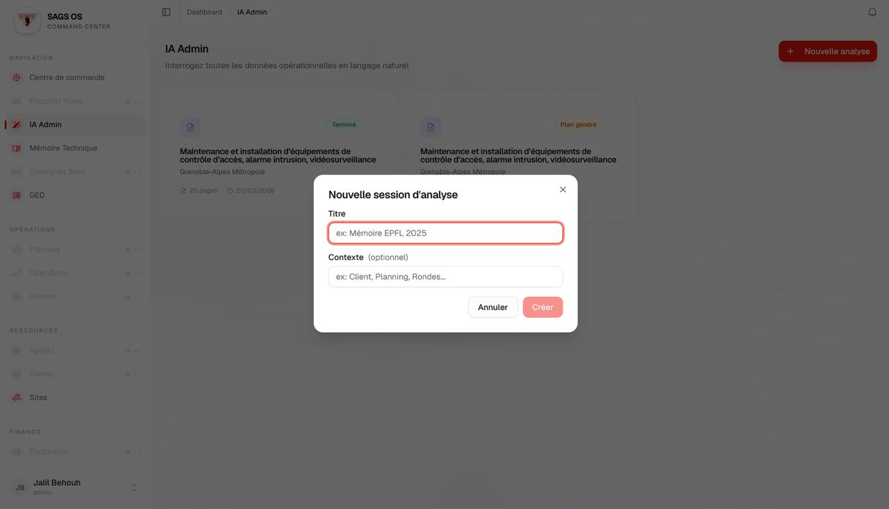
SECTION 34 / 95
Tu poses la question en français, l'IA va chercher dans la table invoices de Supabase, puis formate un tableau clair avec les montants, les clients, et même une action recommandée.
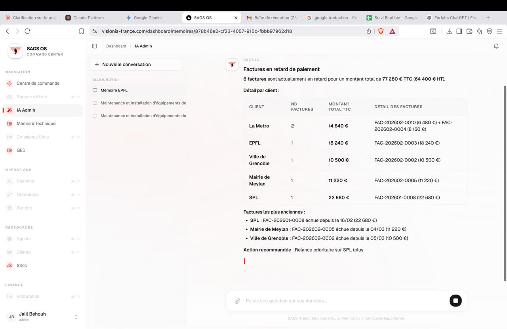
SECTION 35 / 95
Zoom sur la réponse : 6 factures en retard pour 77 280 € TTC. L'IA identifie que SPL est la priorité (facture la plus ancienne depuis le 16/02) et recommande une action de relance.
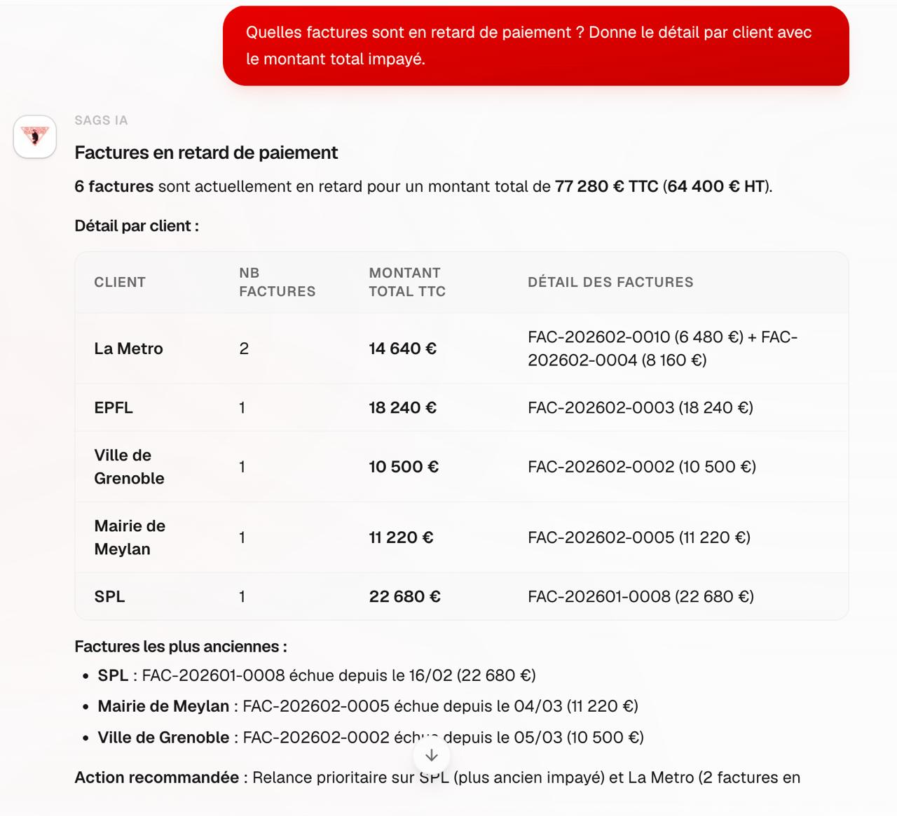
SECTION 36 / 95
Claude Sonnet 4 dispose de 13 « tools » pour interroger Supabase :
Agents actifs, cartes pro
Liste des clients
Sites et géofence
Planning du jour
Bons de travail
Rondes et checkpoints
Consignes de site
Factures et échéances
Prépaies
KPIs globaux
Documents stockés
Recherche vectorielle
Alertes et notifs
Gestion Électronique des Documents. 16 types de documents, wizard en 5 étapes, IA Vision pour les photos, export PDF/DOCX, workflow de validation. Tout ce que Jalil a demandé dans son architecture fonctionnelle.
SECTION 37 / 95
Dans ton document « Architecture fonctionnelle du module GED », tu as défini 8 couches logiques. Voici comment on les a implémentées :
Table ged_documents : identité, métadonnées, statut, version, confidentialité, propriétaire, traçabilité.
Table ged_document_types : 16 types avec schémas JSON, règles de codification, icônes.
Tables ged_workflow_* : templates, instances, étapes. Circuit de validation complet.
Templates Zustand avec sections dynamiques par type de document. Entièrement paramétrables.
FTS Supabase + filtres (type, statut, site, client, entité, tag) + pagination.
7 statuts de cycle de vie : Brouillon → En révision → Approuvé → Actif → Remplacé → Obsolète → Archivé.
RLS Supabase, journalisation dans ged_audit_log, preuve de diffusion, signature.
Claude Haiku pour la vision, reformulation, classification. Intégré à chaque étape du wizard.
SECTION 38 / 95
Un tableau avec tous les documents. Tu vois la référence (générée automatiquement), le titre, le type, le statut, la criticité, le site, la version, et la date de modification. Plus une barre de recherche full-text et des boutons Export CSV et + Nouveau document.
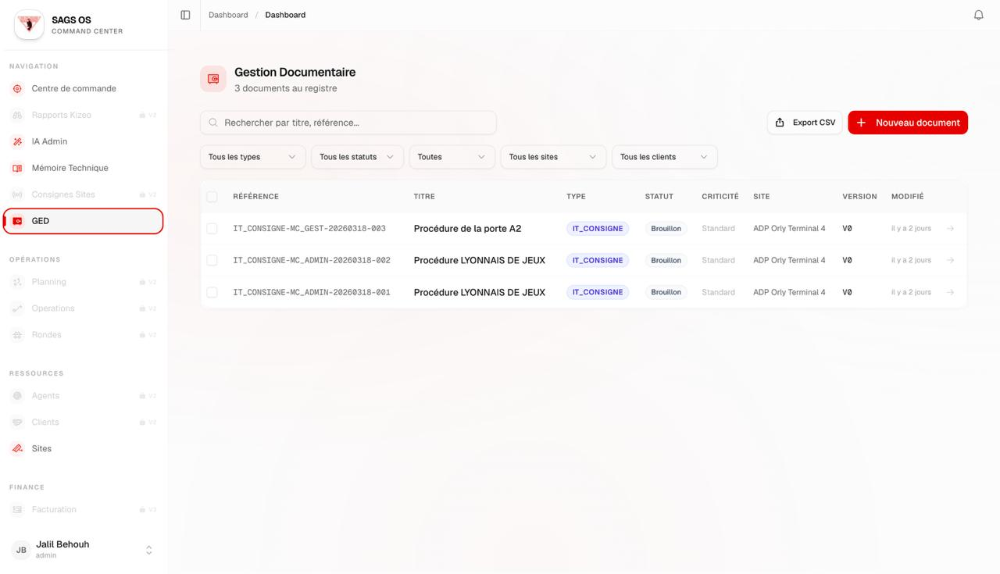
SECTION 39 / 95
16 types de documents, chacun avec son code et sa couleur :
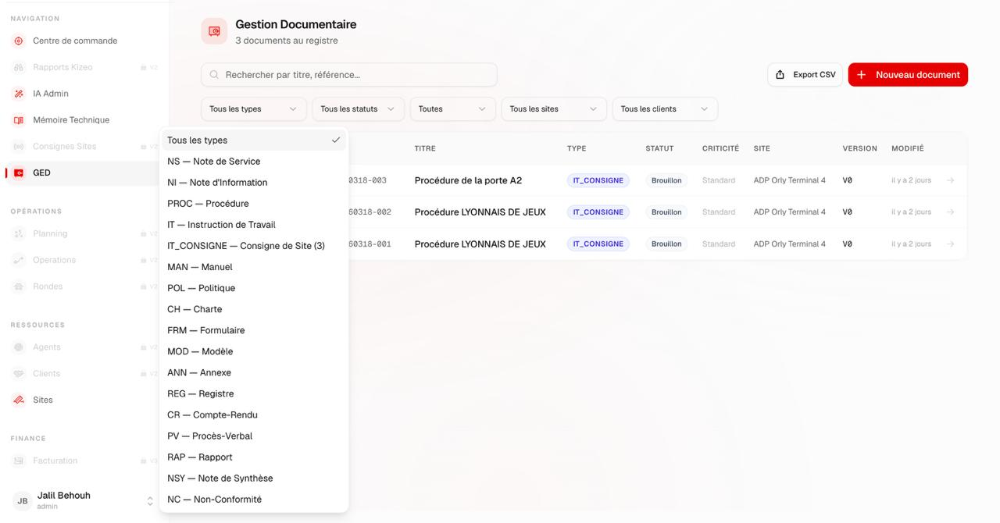
SECTION 40 / 95
Le cycle de vie complet d'un document :
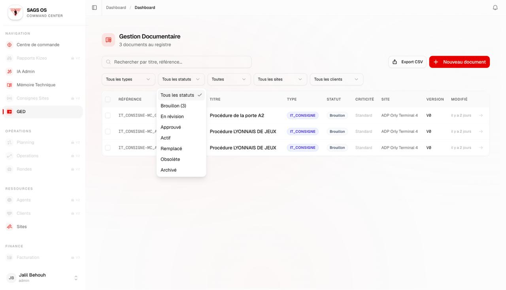
SECTION 41 / 95
Quand tu cliques « + Nouveau document », un assistant te guide étape par étape. À droite, un aperçu PDF en temps réel se met à jour au fur et à mesure que tu remplis les champs.
SECTION 42 / 95
Tu choisis quelle société du groupe émet le document. Chaque entité a son logo, son SIRET, son numéro CNAPS. Le logo apparaît automatiquement sur le PDF généré.
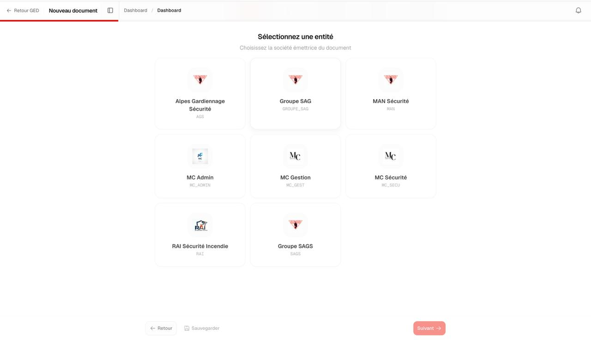
SECTION 43 / 95
Les 16 types sont classés en deux catégories : Documents terrain (IT, IT_CONSIGNE) et Autres documents. Quand tu sélectionnes un type, l'aperçu PDF se met à jour avec le template correspondant.
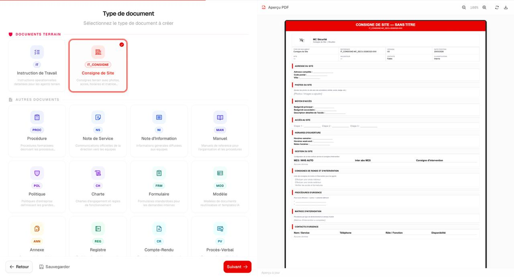
SECTION 44 / 95
Tu renseignes le titre, le site concerné (sélecteur lié à la table Sites de Supabase), le validateur, la criticité (Faible / Moyen / Élevé) et la classification (Interne / Restreint / Confidentiel). L'auteur est détecté automatiquement.
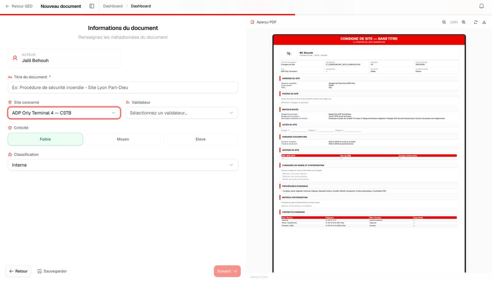
SECTION 45 / 95
C'est ici que ça devient intéressant. Les sections s'adaptent au type de document choisi. Pour une Consigne de Site (IT_CONSIGNE), tu as : Adresse du site, Photos, Moyen d'accès, Accès au site, Horaires, Gestion du site, Consignes de ronde, Procédures d'urgence, Matrice d'intervention, Contacts d'urgence.
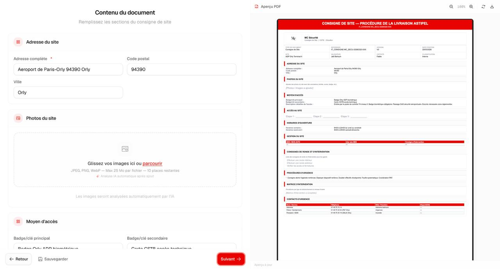
SECTION 46 / 95
Tu glisses tes photos dans la zone de drop (JPEG, PNG, WebP — max 25 Mo). L'image est compressée à 1568px côté client, puis envoyée à Claude Haiku en mode vision multimodale. L'IA génère automatiquement une caption professionnelle et un texte alt.
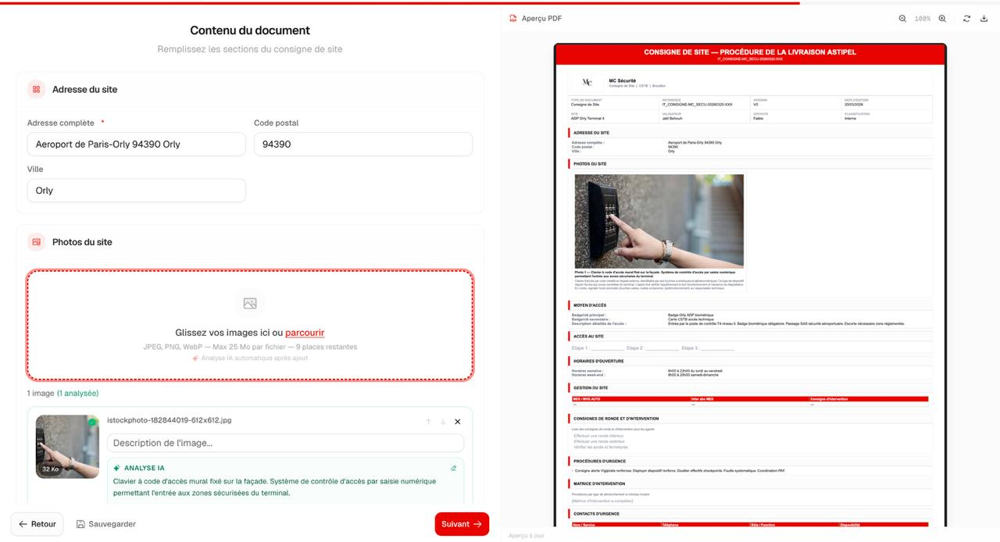
Exemple : L'IA analyse une photo d'un clavier à code et génère : « Clavier à code d'accès mural fixé sur la façade. Système de contrôle d'accès par saisie numérique permettant l'entrée aux zones sécurisées du terminal. »
SECTION 47 / 95
Tu peux ajouter jusqu'à 10 images par section. Chaque nouvelle image est analysée par l'IA, et le PDF à droite se met à jour en temps réel avec les photos et leurs captions.
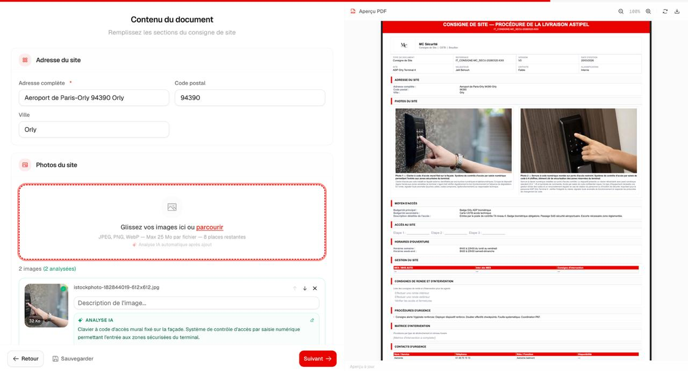
SECTION 48 / 95
Pour les consignes de site, tu renseignes les moyens d'accès (badge principal, badge secondaire, description détaillée), les étapes d'accès, les horaires d'ouverture (semaine et week-end), et les notes horaires spécifiques.
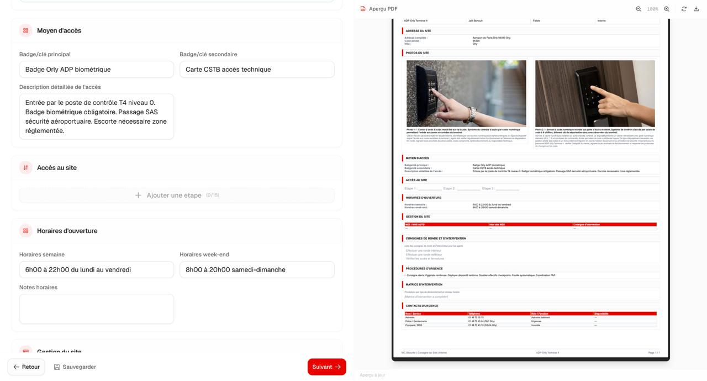
SECTION 49 / 95
Avant de créer le document, tu as un récapitulatif complet : titre, entité, type, criticité, classification, site, validateur, adresse, photos, accès, horaires. Le PDF final est visible à droite. Tu peux cliquer « Réviser avec l'IA » pour que Claude vérifie et améliore le contenu.
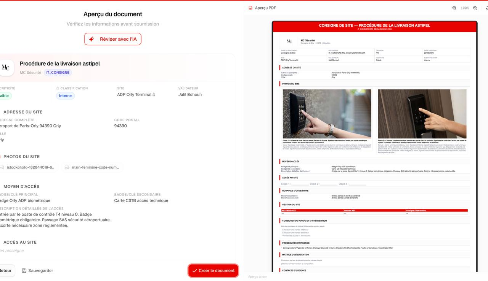
SECTION 50 / 95
Quand tu cliques « Réviser avec l'IA », Claude analyse tout le contenu du document et propose une version améliorée. Tu vois la suggestion en markdown, avec deux boutons : Rejeter ou Appliquer. L'IA ne décide jamais seule — comme Jalil l'a demandé.
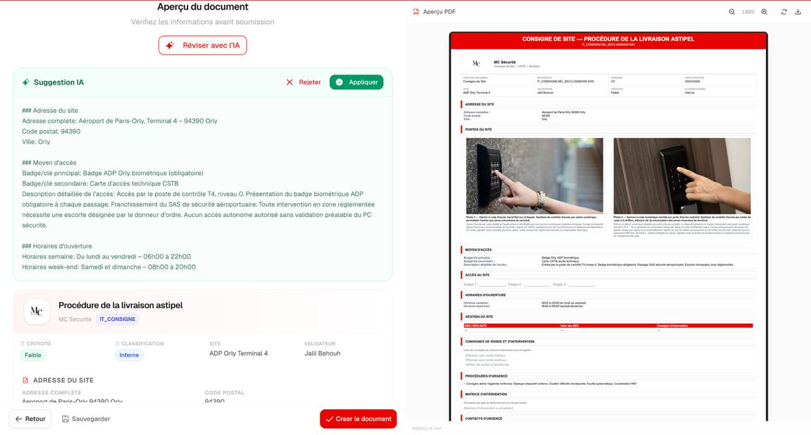
SECTION 51 / 95
Pendant tout le wizard, l'écran est divisé en deux : le formulaire à gauche, le PDF live à droite. Chaque modification se reflète instantanément dans le PDF. C'est généré côté serveur avec @react-pdf/renderer.
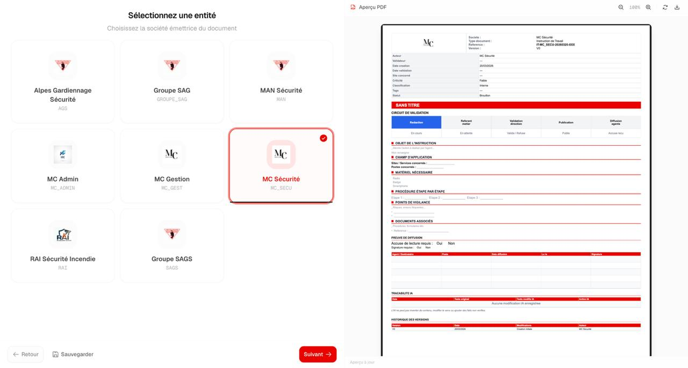
SECTION 52 / 95
Une fois créé, chaque document a sa page dédiée. Tu y trouves : les informations (type, criticité, site, date), les tags, l'aperçu PDF, les boutons d'export (PDF / DOCX), le changement de statut, les versions, et l'historique d'audit.
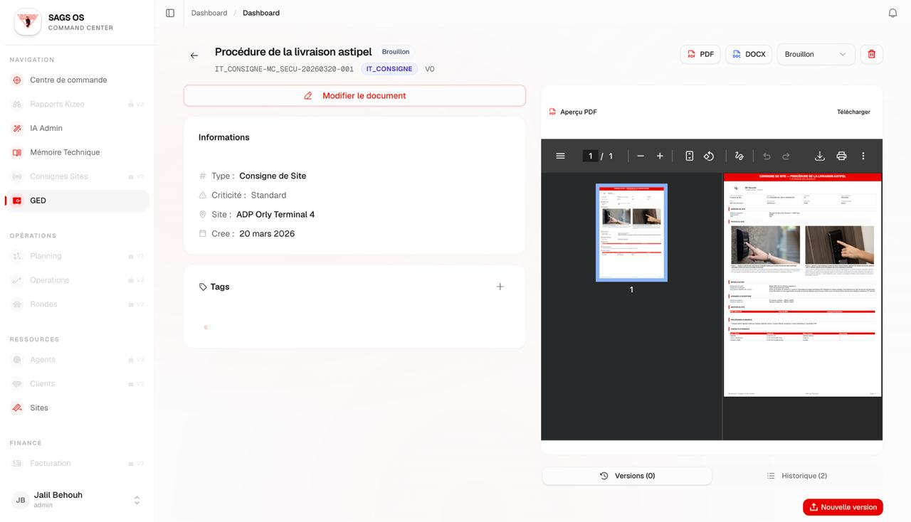
SECTION 53 / 95
Chaque document reçoit une référence unique automatique au format :
IT_CONSIGNE-MC_SECU-20260320-001
Le compteur s'incrémente par jour, par type et par entité. Pas de doublon possible.
SECTION 54 / 95
Voici les tables qui font tourner le module GED :
Table centrale. Titre, type, statut, version, référence, criticité, classification, entity_code, sections_json (JSONB), description, file_path, hash SHA-256.
16 types avec leurs schémas JSON complets (sections, champs, options). Icônes, couleurs, criticité par défaut.
5 entités avec logo, adresse, SIRET, CNAPS, couleur primaire.
Historique des versions : V0, V1, V2... Snapshot complet du document à chaque évolution.
Images attachées : storage_path, thumbnails, caption IA, alt text, analyse JSONB.
Journalisation complète : qui a fait quoi, quand, sur quel document.
Système de tags libre. Relation N:N entre documents et tags.
Templates de circuit de validation avec étapes, rôles, délais.
Traçabilité IA : texte original, texte modifié, action, modèle utilisé.
SECTION 55 / 95
Le wizard GED utilise Zustand (~1 Ko) pour gérer l'état du formulaire. C'est un store global qui persiste entre les étapes et gère la validation, l'auto-save (debounce 2s), et la récupération de crash via localStorage (24h d'expiration).
SECTION 56 / 95
Chaque type de document a ses sections prédéfinies. Voici les renderers :
Texte libre avec assistance IA (reformulation, structure)
Champs groupés (adresse complète, code postal, ville)
Cases à cocher + option libre
Procédure étape par étape avec images
Liste de points ordonnés
Liens vers d'autres documents
Tableau dynamique (participants, contacts...)
Upload images + analyse IA Vision
Matrice d'intervention (4 cellules : jour/nuit × PC/rondier)
SECTION 57 / 95
Chaque étape du wizard est validée avec Zod (schéma TypeScript). Le schéma est construit dynamiquement en fonction du type de document choisi. L'utilisateur ne peut pas passer à l'étape suivante si les champs obligatoires ne sont pas remplis.
SECTION 58 / 95
Depuis la page détail, tu peux exporter en un clic. Le PDF est généré côté serveur avec @react-pdf/renderer (composant React → PDF). Le DOCX est généré avec la lib docx v9.6 (tables, images embed, branding SAGS). Les deux formats incluent le logo de l'entité, le cartouche d'en-tête, les images avec captions, et les sections automatiques (preuve de diffusion, traçabilité IA, historique des versions).
SECTION 59 / 95
Le workflow de validation suit un circuit prédéfini. Chaque étape peut être approuvée ou refusée avec commentaire. Si un étape est refusée, le document revient au statut « refusé ».
SECTION 60 / 95
Chaque document GED est automatiquement indexé dans pgvector pour la recherche sémantique. Le contenu est découpé en chunks de 3200 caractères avec un overlap de 400, embed en vecteurs 1536 dimensions, et stocké avec un index HNSW. Cela permet à l'IA Admin et au générateur de mémoires de retrouver les documents pertinents.
Supabase, pgvector, API routes, sécurité, déploiement. Le dessous des cartes.
SECTION 61 / 95
L'app utilise 3 instances différentes de Supabase selon le contexte :
Pour les requêtes côté navigateur. Utilise la clé anon. Cookies gérés automatiquement par @supabase/ssr.
Pour les Server Components et Server Actions. Cookie middleware avec try-catch pour la compatibilité read-only.
Pour les opérations sensibles : bypass RLS, gestion des utilisateurs, RAG ingestion. Stateless, pas de session.
SECTION 62 / 95
Chaque requête passe par un middleware qui vérifie la session et redirige selon le rôle. Un agent terrain ne peut pas accéder au dashboard, et un admin ne peut pas accéder au portail agent.
SECTION 63 / 95
Le RAG (Retrieval-Augmented Generation) fonctionne avec pgvector, une extension PostgreSQL pour les vecteurs. Chaque document est découpé en morceaux, transformé en vecteur 1536 dimensions, et indexé avec HNSW (m=16, ef=64). La recherche utilise la distance cosinus avec un seuil de 0.7 et un boost de 1.2x pour les documents récents.
SECTION 64 / 95
Stratégie de chunking en 3 niveaux : d'abord par headers markdown (##), puis par paragraphes, puis par phrases. Taille cible : 3200 caractères (~800 tokens) avec 400 caractères d'overlap entre les chunks pour garder le contexte.
SECTION 65 / 95
SECTION 66 / 95
Toutes les routes /api/* ont des headers de sécurité configurés dans next.config.ts :
SECTION 67 / 95
Les fichiers sont stockés dans 4 buckets Supabase Storage :
Privé, 25 Mo max, images uniquement. Thumbnails 150px + 300px générés automatiquement.
Documents GED (upload fichier), 100 Mo max. Hash SHA-256 pour déduplication.
CCTP et templates pour les mémoires techniques.
Photos des consignes de site.
SECTION 68 / 95
L'application est déployée sur Vercel, région CDG1 (Paris) pour la latence minimale. Le build utilise Turbopack. Les libs serveur (react-pdf, jspdf, docx, mammoth, unpdf) sont déclarées dans serverExternalPackages pour éviter le bundling côté client.
SECTION 69 / 95
Les 22 fichiers de server actions suivent tous le même pattern :
SECTION 70 / 95
Les notifications utilisent Supabase Realtime. Quand une notification est insérée dans la table, le hook useNotifications met à jour le compteur de la cloche en temps réel via WebSocket. Pas de polling, pas de refresh.
Ce qui est fait, ce qui reste, et la roadmap.
SECTION 71 / 95
Dashboard, auth, 7 rôles, sidebar, header, mobile nav, design system premium, notifications temps réel.
DEPLOYÉGénération mémoires techniques (Claude Sonnet), relecture GPT-4o, score qualité, export PDF/DOCX. Chat admin RAG avec 13 tools Supabase.
DEPLOYÉ16 types de documents, wizard 5 étapes, IA Vision, workflow validation, export PDF/DOCX, intégration RAG, audit log complet.
DEPLOYÉExtraction auto Kizeo, consignes Telegram, planning/opérations/rondes.
PLANIFIÉSECTION 72 / 95
Le document « Architecture fonctionnelle du module GED » de Jalil définit 8 couches. Voici le mapping :
SECTION 73 / 95
Jalil a défini 8 principes directeurs. Tous sont respectés :
Pas un simple fichier. Identité, cycle de vie, métadonnées, droits.
Workflows, statuts, types, templates — tout configurable.
Fonctionne seul ou connecté au reste de SAGS OS.
5 sociétés gérées, chacune avec son logo et sa codification.
RLS Supabase + audit log sans complexifier l'UX.
Chaque action laisse une trace dans ged_audit_log.
Wizard guidé, aperçu PDF temps réel, auto-save.
Propose, ne décide pas. Boutons Rejeter/Appliquer.
SECTIONS 75-95 / 95
CSS vars wrappés dans hsl(). Import @tailwindcss/postcss. Theme inline.
25 composants Radix UI : Button, Dialog, Select, Tabs, Sidebar, Command, etc.
4 presets : fadeInUp, staggerContainer, scaleIn, slideInRight. Easing custom.
Daygrid, timegrid, list. CSS custom : today #FEF2F2, now-indicator SAGS red.
Carte interactive pour les sites. Géofence avec rayon configurable.
Graphiques 30 jours sur le dashboard. 5 couleurs SAGS red palette.
useChat, DefaultChatTransport, sendMessage({text}), status streaming/ready.
12 schémas de validation : agents, clients, consignes, GED, invoices, etc.
Store GED avec subscribe() pour auto-save. Dirty tracking + crash recovery.
Toasts bottom-right, light theme, 1px border, custom shadow. Notifications UI.
Génération PDF server-side. Cover, TOC, blockquotes, presenceAhead 40.
Export Word avec tables, images, bold/italic inline, header/footer.
Conversion DOCX → HTML pour extraction de texte côté serveur.
Parsing PDF pour extraction texte. Utilisé dans l'upload CCTP.
Icônes primary (duotone/fill). Lucide pour shadcn uniquement.
Formatage dates, calculs horaires, durées pour planning/paie.
Drag & drop fichiers pour GED images, CCTP upload, documents.
Rendu markdown dans le chat IA et les previews GED.
Coloration syntaxique dans les blocs de code du chat.
40+ interfaces, union types, path alias @/*, strict mode.
eslint-config-next pour les bonnes pratiques React 19.
SECTION 74 / 95
Jalil, Andrei — vous avez maintenant la vision complète de SAGS OS. Le front-end, l'IA, la GED, l'architecture technique. Tout est en production sur visionia-france.com.
Des questions ? On en discute.
Fait avec Next.js 16, Supabase, Claude Sonnet, GPT-4o, et beaucoup de café.
— Baptiste